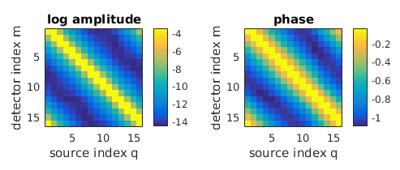

| Image Reconstruction in Diffuse Optical Tomography |
Toast toolbox tutorial: Generating frequency domain dataThis example extends the previous tutorial to simulate modulated source distributions, and return amplitude and phase data for all measurements. To run this tutorial yourself, you need Matlab, and you have to install the Toast toolbox on your computer. To save you typing, the full Matlab script for this example can be downloaded here. Step 1: Setting up the frequency domain system matrixThe frequency-domain version of the diffusion equation is given by 
where Φ is now a complex photon density depending on modulation frequency ω. Most of the problem setup (creating the mesh, defining the parameter distributions and setting up the source and detector vectors) is identical to the previous tutorial. The only difference is the inclusion of a frequency-dependent term in the system matrix K. This term is imaginary, making the linear system complex-valued. Toast adds the frequency term automatically in the call to toastSysmat if a nonzero modulation frequency is provided. The frequency is given in MHz.
freq = 100; % modulation frequency [MHz]
K = dotSysmat(mesh,mua,mus,ref,freq); where hmesh is the mesh handle, and mua, mus, ref are the optical parameter vectors as created in the previous tutorial. Step 2: Solving the complex linear systemGiven source and detector vectors qvec and mvec, the linear system can now be solved as before:
Y = mvec.' * (K\qvec);
Y is now a complex-valued measurement vector. Usually, the data are represented as logarithmic amplitude and phase:
logY = log(Y);
lnamp = real(logY); phase = imag(logY); As before, the data can be displayed as sinograms. Subtraction of the homogeneous solution shows the effect of the parameter inclusions on the measurement data: |